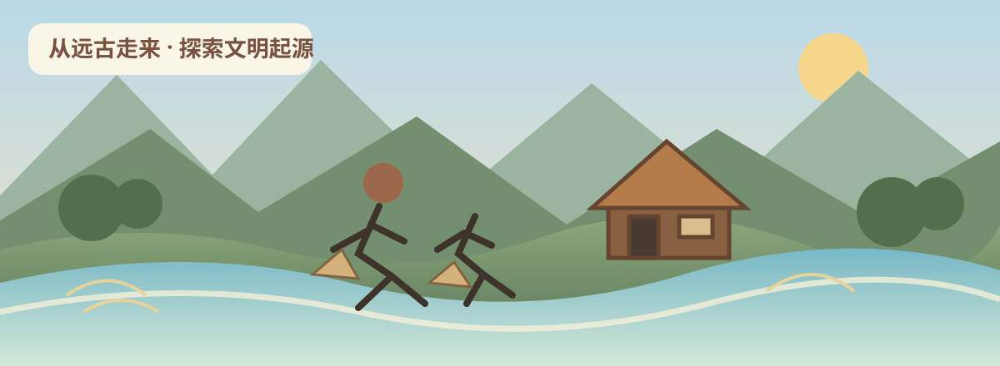

CHINESE HISTORY · GRADE 7 · VOLUME 1
史
中国历史 · 七年级上册
依据教育部组织编写、人民教育出版社 2024 年版教材建设。沿着时间线认识史前社会、夏商周、秦汉以及三国两晋南北朝，学习从史料中提取信息、理解历史变化。

4 个单元21 课7 个学习区每课 4 道检测题古今对照 · 历史思辨 · 史料研读
请选择一课开始学习
本册历史学习主线
史前文明夏商周秦汉统一三国两晋南北朝
学习历史不只是记住年代和人物，还要理解社会变化的原因、制度运行的方式、不同群体的生活，以及历史经验与当代社会之间的联系。每课的古今对照与思辨任务都要求用证据支持观点，而不是只表达个人好恶。
历史思维工具箱
时空观念
把事件放进具体时间、地点和历史阶段。
史料实证
区分史料信息、研究推断和未经证实的说法。
历史解释
从多种因素解释原因、过程与影响。
家国情怀与现实关照
理解历史文化传承，同时尊重多元经验和证据。